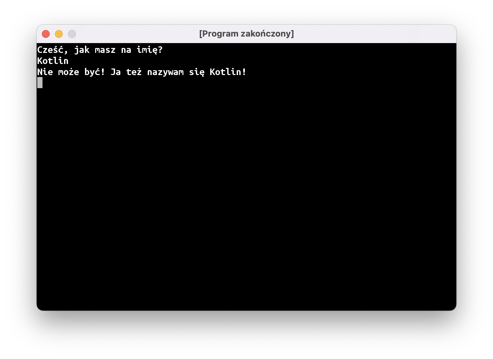

Funkcje, c.d.
Poprzednie zajęcia skończyliśmy na pisaniu funkcji megafon:
fun main() = terminal {
val ostrzeżenie = "uwaga, uwaga"
megafon(ostrzeżenie)
}
fun megafon(tekst: String) {
print("📣 ")
print(tekst.uppercase())
println("!!!")
}
Jest jeszcze kilka rzeczy, których możemy nauczyć się na tym przykładzie.
Zakresy widoczności
Jeżeli spróbujemy wewnątrz funkcji megafon użyć stałej ostrzeżenie, nasz program nie uruchomi się, a IntelliJ podkreśli tę linijkę na czerwono:
fun main() = terminal {
val ostrzeżenie = "uwaga, uwaga"
megafon(ostrzeżenie)
}
fun megafon(tekst: String) {
print("📣 ")
print(ostrzeżenie.uppercase()) // hmm, czemu to nie działa?
println("!!!")
}
Natknęliśmy się na bardzo ważną programistyczną koncepcję: zakresy widoczności.
Wyobraźcie sobie, że każda funkcja jest pudełkiem. Pudełko ma otworki, przez które można wsunąć do niego “klocki” – to są nasze parametry funkcji. Metki przyczepione do wsuwanych klocków nie są widoczne wewnątrz pudełka, więc nie można ich tam użyć. Zamiast tego, każdy otwór ma swoją nazwę, której można używać wewnątrz funkcji.
Typ Int
A co stanie się, jeśli spróbujemy przekazać do megafonu liczbę?
fun main() = terminal {
megafon("uwaga, uwaga")
megafon("rozpoczynamy odliczanie")
megafon(3) // błąd
megafon(2) // błąd
megafon(1) // błąd
megafon("start")
}
Program zostanie podświetlony na czerwono. Liczby i tekst to dwa różne “kształty”. Nie możemy przekazać liczby (typu Int) do funkcji, która oczekuje argumentu String. To tak, jakbyśmy starali się wepchnąć kwadratowy klocek w okrągły otwór.
Na szczęście, da się temu łatwo zaradzić: możemy na podstawie naszego “kwadratowego” (Int-owego) klocka z liczbą stworzyć nowy, “okrągły” “klocek” typu String. Służy do tego funkcja toString(), która “dolepiona” jest do każdego “klocka” w języku Kotlin.
fun main() = terminal {
megafon("uwaga, uwaga")
megafon("rozpoczynamy odliczanie")
megafon(3.toString())
megafon(2.toString())
megafon(1.toString())
megafon("start")
}
Funkcje zwracające obiekt
Funkcje mogą nie tylko przyjmować “klocki”, ale także je tworzyć. Używaliśmy już kilku takich funkcji:
readln()zwraca linijkę tekstu wpisaną przez użytkownikauppercase()zwraca tekst zamieniony na wielkie litery
Napiszmy teraz własną metodę, która będzie zwracać jakieś dane. Po nawiasach okrągłych musimy podać po dwukropku typ, czyli “kształt klocka”, który będzie tworzyć nasza funkcja. Następnie, wewnątrz funkcji musimy użyć słowa kluczowego return, żeby zakończyć działanie naszej funkcji i zwrócić jakiś “klocek”:
fun najfajniejszyWyrazŚwiata(): String {
return "pomidor"
}
Instrukcja if
Załóżmy, że piszemy grę, gdzie gracz steruje statkiem. W zależności od tego, który przycisk naciśnie gracz, powinny dziać się różne rzeczy. Czyli nie chcemy wykonywać wszystkich instrukcji w programie po kolei, z góry na dół. Jeżeli gracz naciska strzałkę w lewo, to statek ma lecieć w lewo; jeśli naciska strzałkę w prawo – to w prawo. Czyli mamy klasyczną sytuację “jeśli dzieje się coś, to zrób to; w przeciwnym razie, zrób tamto”. W programowaniu służą do tego instrukcje warunkowe. W języku Kotlin wygląda ona następująco:
if (warunek) {
// zrób coś
} else {
// zrób coś innego
}
Nasz warunek to też tak naprawdę “klocek” o specjalnym kształcie – Boolean, czyli obiekt, który reprezentuje Prawdę albo Fałsz. Jednym ze sposobów stworzenia takiego klocka jest operator porównania == (używamy dwóch znaczków równości, bo pojedynczy jest używany do tworzenia stałych i zmiennych). Jeśli obiekty po lewej i po prawej stronie są sobie równe, dostaniemy w wyniku obiekt true, czyli Prawdę. W przeciwnym razie dostaniemy false, czyli Fałsz.
Na próbę przeróbmy nasz program witający użytkownika tak, aby inaczej reagował, gdy użytkownik wpisze imię “Kotlin”:

Oczywiście, jeśli ktoś wpisze inne imię, powinien zostać wypisany normalny komunikat:

Podsumowanie
- Stałe stworzone wewnątrz funkcji nie są widoczne w innych wywoływanych funkcjach. Fachowo nazywamy to zakresem widoczności.
- Liczby całkowite w Kotlinie mają typ
Int(z angielskiego “integer”). - Każdy obiekt ma funkcję
toString(), która tworzy tekstową reprezentację tego obiektu. W ten sposób możemy zamienić liczbę1na tekst"1". - Dzięki instrukcji warunkowej
if (…) {} else {}nasz program może wykonać inne kawałki kodu w zależności od sytuacji. - Typ
Booleanużywany jest do przedstawienia prawdy (obiekttrue) lub fałszu (false).